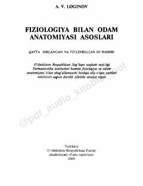

FBTibbiyot va farmatsevtika talabalari uchun inson anatomiyasi va fiziologiyasi bo'yicha asosiy darslik.
Ushbu darslik farmatsevtika va tibbiyot oliy o'quv yurtlari talabalari uchun mo'ljallangan bo'lib, inson organizmining tuzilishi va funksiyalarini zamonaviy ilmiy yutuqlar asosida yoritib beradi. Kitobda morfologik ma'lumotlar fiziologik jarayonlar bilan bog'liq holda bayon etilgan.